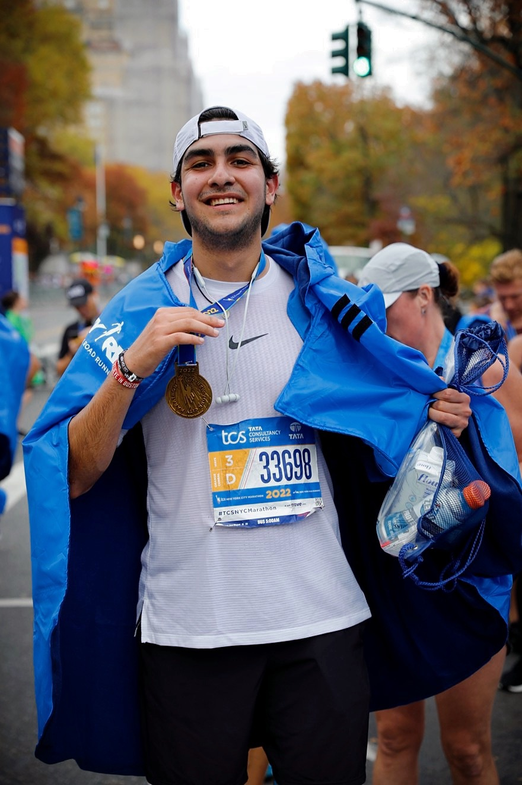

Marathon Achievements
- Completed 4 World Marathon Majors: NYC, London, Chicago, Boston
- Running the Tokyo Marathon in 2025 for charity (Peace Winds Japan)
- Ran the entire MBTA Subway System (130 km) to raise $1,000 for mental health awareness



Academic Awards
- National Society of Collegiate Scholars
- International Baccalaureate Diploma Recipient (2021)
- UNAM Academic Scholarship (2019-2021)
- Northeastern CPS Award
- Questrom Full Tuition Dean's Scholarship
Charity & Fundraising
- Raised $1,000 for The Hidden Opponent (student-athlete mental health)
- Running the Tokyo Marathon to raise $3,000 for Peace Winds Japan